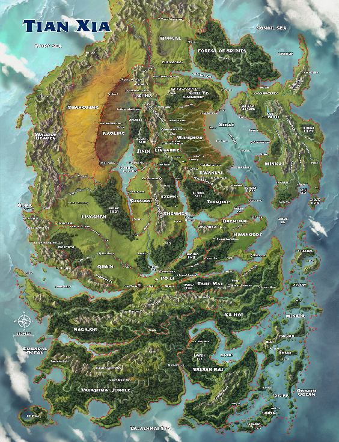
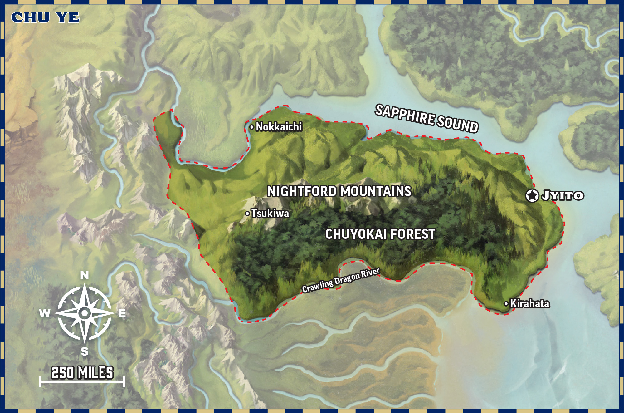
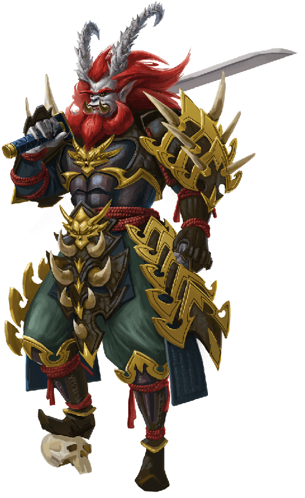
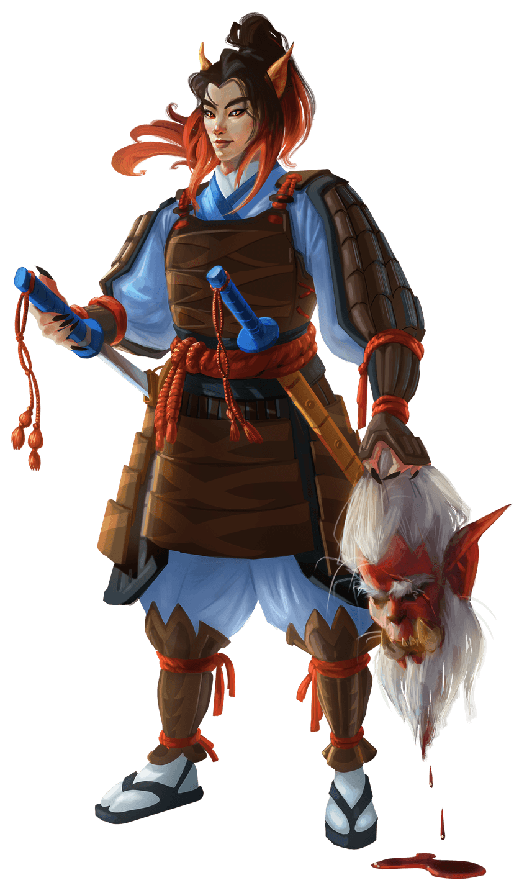
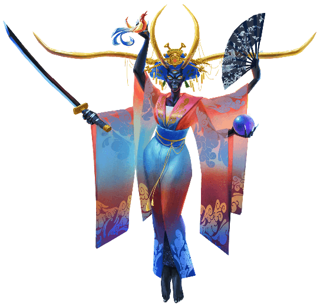
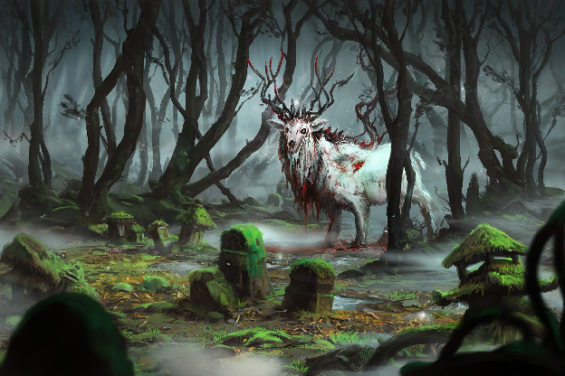
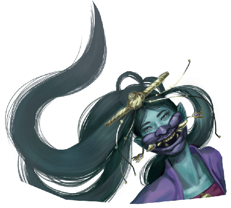
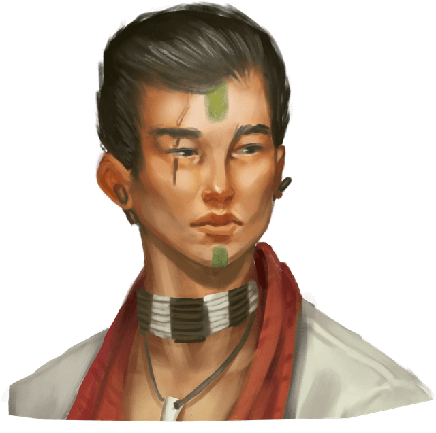

Player Guide¶
Thanks chatGPT for the system differences. We will all be learning pathfinder system. Ive never played it either however i like that there are no dead levels, I like everyone gets 3 actions use them how you wish. We’ll make some mistakes but overall lets tell some fun stories.
Ive decided to use Tian Xia as the world for our campaign. Specifically we will be starting in Chu Ye. Ive provided a guide of both Tian Xia and Chu Ye.
Our adventure will start in a small village named Willowshore along the northern shore of Chu Ye. During Session 0 we will create new characters, develop character ties to each other and the town of Willowshore, and you will have opportunities to shape Willowshore.
Player Guide for former D&D 5e Players¶
1. Core Differences at a Glance¶
| D\&D 5e | Pathfinder 2e Remastered |
|---|---|
| Ability Scores: Modifier-based | Ability Score: Direct increases (+2/level), more meaningful at creation |
| Advantage/Disadvantage | No advantage/disadvantage: Stacking circumstance, status, and item bonuses/penalties |
| Bounded Accuracy | Higher numbers, greater differences between “level 1” and “level 20” |
| Proficiency Bonus: Universal | Proficiency a rank (trained, expert, master, legendary) per skill, armor, save, weapon, spell, etc. |
| Feats: “Big”/rare | Feat system everywhere: ancestry, class, skill, general feats at most levels |
| Short/Long Rest Focus | No long/short rest: Daily preparations, Focus Points, Stamina (remastered) |
| Reaction: 1 per round, as labeled | Many types of reactions; ‘Trigger’ and ‘Action’ tags are explicit |
| Classes: Broad features, some unique | Every class is highly customizable; class feats every other level |
| Alignment central; lots of focus | Alignment de-emphasized in Remaster (removed/optional) |
2. Character Creation¶
- Ancestry and Heritage (Instead of “race”): Your “ancestry” gives broad traits (dwarf, elf, orc), with a “heritage” for subtypes (e.g., cavern elf).
- Background: Mechanically meaningful—grants ability boosts and feats.
- Class: Many choices at every level thanks to the class feats.
- Ability Boosts: "Boosts" (+2 to score at creation), “flaws” (optional)
- Feats, feats, feats!: At nearly every level, you’ll get to customize with ancestry, class, skill, or general feats.
3. Actions & Economy¶
- Three-Action Economy: Each turn you get three actions—any combination of attack (Strike), move (Stride), cast (if 1-3 actions), raise shield, etc. Many abilities cost 1, 2, or 3 actions!
- No ‘move + attack’ restriction: You can attack, move, attack again—or whatever order you like.
- Reactions: One per round, many are gained through feats (Opportunity Attack isn’t universal).
- Free Actions: Clearly labeled.
4. Proficiency & Skills¶
- Ranks: Four levels—Trained, Expert, Master, Legendary. Applies to skills, saves, weapons, armor, perception, spells, etc.
- Skill Feats: Personalize expertise within skills (e.g., “Alchemical Crafting”)
- Level to Everything: Proficiency \= bonus (level + proficiency rank)
5. Spells & Magic¶
- Traditions: Four—Arcane, Divine, Occult, Primal (not “schools”)
- Spell Slots: Vancian style (prepare, spontaneous cast), but many options
- Cantrips: Scale with your level (always useful!)
- Spell Traits: Each spell has clear traits, actions to cast, and components.
6. Hit Points and Healing¶
- Hit Points: Total \= class HP + Con mod + “ancestry HP” per level.
- No “short or long rests”: Healing is via magic, medicine, or spells; treat wounds is a downtime activity.
- Wounded & Dying: More explicit dying and wounded conditions—pay attention!
7. Conditions & Status Effects¶
- Very explicit and codified: Frightened, Flat-Footed, Doomed, Stunned, Dazzled, etc.
- Many abilities inflict or cure these.
8. Equipment & Wealth¶
- Item Quality: Items are ranked (item level), can have runes/upgrades for increased power.
- Bulk: Inventory management is a bit more in-depth (“bulk” replaces “encumbered”).
9. Advancement¶
- Milestone or XP: Both are used, by GM preference.
- More Customization: Character options at nearly every level.
10. Table Culture & Spirit¶
- Collaborative Storytelling: Pathfinder rewards creativity and teamwork!
- Rules-Medium/Crunchy: Expect more tactical, crunchy gameplay than D\&D 5e, but loads of options and balance.
Frequently Surprised? Check these out!¶
- Shield mechanics are active: You must "Raise a Shield" to use its AC bonus.
- Criticals: Crit on 10 or more above the target number, not just a natural 20 (watch for crit fails, too).
- Monster Math: Creatures are built differently; what you fought as “CR3” before might look very different now.
Pathfinder 2e Remaster removes/changes:¶
- Alignment (optional)
- Spells and creatures rewritten for clarity and Open Gaming License reasons.
Helpful Links¶
Tian Xia¶

What is Tian Xia?¶
Tian Xia (“tee-AHN sha”) is the vast, wondrous continent lying far to the east of Avistan and Garund. Inspired by the diverse histories, mythologies, and cultures of Asia, Tian Xia blends familiar fantasy adventure with ancient legends, mystical traditions, and epic struggles between good and evil.
Why Play in Tian Xia?¶
Tian Xia is a land of boundless opportunity—where heroes earn mystical blessings, ancient evils stir in shadowy temples, and new destinies are written on dragons’ wings. In Tian Xia, your character’s legend is shaped by honor, ambition, family ties, and the ever-turning cycle of luck and fate. Are you ready to chase immortal secrets, journey along spirit-infested rivers, or test your courage against warlords, oni, or forgotten gods?
Five Tips for Tian Xia¶
The tips below are commonplace no matter where you go in Tian Xia—suggestions you might give to a rookie adventurer in town or something a family member might remind you of as you buckle your armor and leave home for your quest.
Celestials aren’t always good. Most Avistani are familiar with the departure of
Asmodeus from Heaven, a migration that changed him and his followers into devils. The dichotomy between righteous celestials and profane fiends is thus often taken for granted and further enforced by dramatic tales of angels falling from grace. In Tian Xia, a celestial’s behavior has little to do with their status as a creature of Heaven. Even a banished godling or a drunken priest can still conjure incredible sacred powers.
Appearances are deceiving. Shapeshifters abound in Tian Xia, and no one can be certain if a priest or merchant they’re talking to is really who they seem to be. Kitsune move through cities wearing human faces, tanuki hide as teakettles or statues, and rats who snatch a stray fingernail can turn into someone’s doppelganger. Even Tian Xia’s goblins, known as dokkaebi, are known to transform into other forms, often appearing as attractive but troublesome members of other ancestries.
Dragons aren’t monsters. Heroic tales of Taldan knights facing down dragons are common entertainment in Avistan—but in Tian Xia, dragons aren’t massive beasts to slay. They’re people, just like humans, nagaji, tengu, elves, and others who live upon the continent. They’ve served as rulers, advisors, guardians, and spiritual leaders across history, and they’re chosen agents of the Empress of Heaven. If a Tian person comes into conflict with a dragon, their first thought usually isn’t how to kill it, but how to negotiate with it.
Spirits aren’t abstract. Elsewhere in the world, spirits are often insubstantial and thus remain out of mind for the average person. Those who know how to call to these strange entities can wield incredible power, but most will never see a spirit beyond a stray leshy or a summoned eidolon. In Tian Xia, kami walk the forests, anito teem in the jungles, and yakshas help in the villages—tangible beings that feel very real. Offending the spirit of a river is much more serious when that river spirit might manifest as a dragon in response!
The dead are never truly gone. In many philosophies, a soul is judged by
Pharasma, then moves on to its final reward. In Tian Xia, ancestors linger, watching their family and affecting their fortunes. Village heroes can straddle the line between ghost and god; sages who cultivate their spirit can even transcend mortality. The Celestial Court of Tian Xia also offers a different path for those who choose it: reincarnation. Much like history, souls move around the universe in circles, and death isn’t always a permanent ending.
Playing a Character from Tian Xia¶
- Backgrounds:
- You might be a wandering samurai, exiled prince, farmhand’s child, monastery student, trader, or even a kitsune in disguise.
- Ancestries:
- Classic ancestries (human, elf, dwarf, etc.) mingle with kitsune, tengu (birdfolk), nagaji (serpentfolk), samsarans, and more—each with deep roots in Tian Xia.
- Connections:
- Family, clan, or spiritual tradition might influence your story: who owes you a debt, what ancient duty must you fulfill, which spirits watch over you?
What Should I Expect?¶
- Adventure hooks built on culture:
- Monsters and magic are as likely to come from folklore, ancestral curses, or bureaucratic intrigue as from a rampaging ogre.
- Honor and reputation matter:
- Sometimes, how you act or are perceived can be as important as success in a quest.
- Legends walk among us:
- The old stories are true—wise dragons, fierce oni, and celestial bureaucrats may cross your path.
- Many paths, many styles:
- Whether you seek kung fu duels, grand wars, lonely pilgrimages, merchant intrigue, or mystical mysteries, Tian Xia has room for every kind of hero.
A Glimpse of the Realms¶
- Goka: Trade hub, city of wonders, crossroads of cultures—think “Imperial Hong Kong.”
- Kaoling: Empire ruled by hobgoblins; ambitious, militaristic, a land of discipline and war.
- Po Li: Home of unique traditions, bureaucracy, and ancient magic; known for wisdom and patience.
- Xa Hoi: Ruled by descendants of dragons, famous for devotion and stoicism.
- Valley of Spirits: Home to kitsune, kami, and mystical phenomena—a place where reality is thin.
Things To Know¶
- Names & Pronouns: It’s okay if you stumble over names.
- Respect for Cultures: Tian Xia draws from many Asian inspirations, but it’s a fantasy setting first.
Chu Ye¶

Empire of Blood¶
Chu Ye’s history is perhaps best summarized by the saying, “kind hearts attract poisoned blood.” Acupuncture began in the region, and its medical innovations delivered miracles compared to traditional remedies. That success planted the seeds for its doom—malevolent oni from the Forest of Spirits, disguised as humanoids, infiltrated the nation to take advantage of its kindness. When Imperial Lung Wa fell, these corrupted nature spirits saw an opportunity to reveal their true forms and conquer the nation. A century of their cruel rule has brought Chu Ye to the brink, its healing hands now sticky with its own blood.
Today the region is a land of extreme contrasts. The oni and their favored mortals cavort amid a dragon’s hoard of wealth while 90 percent of the population don’t have a copper to their name. Propaganda praises Chu Ye as a land of opportunity where hard work can earn any humanoid a position in the ruling ranks, but authorities also warn that jealous neighbors besiege the nation from all sides. Paranoia permeates the land, breeding discontent and belying the veneer of stability offered by its immortal ruler, Shogun Tsuneni. No one sleeps easy in Chu Ye.

Tsuneni
Most of the population is human, consisting of Tian-La, Tian-Min, and Tian-Shu. Oni are five percent of the population. Giants and ogres support the ruling oni, but no census of their homes in the Nightford Mountains has ever reported back. Enclaves of kitsune and samsarans exist as well, but keep a low profile.
Shogun Tsuneni markets Chu Ye as a tourist destination for “distinguished guests.” Such guests include jorogumo seeking interesting prey, wayangs desiring a place to live, and yaoguai adventurers looking to win and spend treasure. Wealthy humanoids are also welcome. The city of Kirahata is a playground for the rich and powerful. Casinos, pleasure palaces, and hunting lodges line its beaches. Some powerful visitors enjoy Chu Ye’s excesses so much they become permanent residents. Human-appearing oni compete to lure the wealthiest to become ranking officials in their municipalities, enabling the oni to run grifts as low-level authorities.
Meanwhile, a rebellion is taking shape in the shadows. Mizu Ki Hikari is a human resistance organization based in Chuyokai Forest. The darkness deep within is so terrible it keeps the oni away, and an ambitious general seeks to weaponize it. Humans have also found unlikely allies in immigrant wayangs who find themselves empathizing with the oppressed. Tengu from Kwanlai seeking to preserve Chu Ye’s medical knowledge are smuggling supplies in by sea while the rise of an underworld dragon under the Nightford Mountains destabilizes oni power. Life for humanoids in Chu Ye can barely be called such, but a glimmer of hope survives.
Pronunciation Guide¶
Chu Ye’s humanoid population are settlers who colonized the region under the Yixing and Lung Wa empires. Oni names reflect the oni’s ties to Minkai.
Chu Ye: choo (pronounced like “true” without the “r”) yeh
Jyito: JEE-toe
Tsuneni: TSOO-neh-nee
Kirahata: kee-RAH-hah-tah
Nokkaichi: nohk-KAI-chee
Tsukiwa: TSOO-key-wah
Mizu Ki Hikari: MEE-zu kee hee-KAH-ree
Giwas: chee-VAHS
Walis: wah-LEASE
Den Taijian: duhn tye JEE-uhn (condensed into one syllable)
Geography¶
Chu Ye is trapped by Zi Ha’s mountains, Hongal’s tundra, and a long coastline. The only destination for refugees is the southern border with Wanshou. That journey is a perilous one through Chuyokai Forest, which shrouds the southern half of the nation. Then there are the Nightford Mountains, a once-dormant volcano range that now paints the sky red and the earth ashen. The diverse geography yields many natural resources, but Chu Ye’s decaying infrastructure leaves it unable to benefit. Potholes and overgrown roads hinder transportation from mountain mines. Mismanagement of crop rotation has rendered farms in the north unproductive. Seafood is the country’s primary source of nourishment, but poorly maintained boats make every fishing trip a deadly gamble.
An eerie silence dominates Chuyokai. The stench of rotting flesh rises with each step upon the soft forest floor where bodies of undead animals wait beneath fallen leaves. Occasionally a sob might break the quiet: the cry of a grave kami remembering its past. Those who hear it would do well to take cover, otherwise the kami might initiate a hunt for living prey, its every move accompanied by the sound of cracking joints. Every member of Mizu Ki Hikari carries incense or paper money to burn—such offerings are the only way to placate a grave kami ready to attack.
Mining shafts riddle the Nightford Mountains. Some emit smoke from fire giant forges, while others lay abandoned for ogres or wild animals to claim as homes. Wide, carved paths connect giant enclaves, and teams of fire and cloud giants work to keep them open through summer mudslides and winter snowstorms. Big game such as mammoths and elk live on plateaus between the peaks. Rumors place mythical creatures like kirin, inmyeonjo, and even phoenixes atop the crags, but no living human has sighted one. Volcanic eruptions began five years ago and disrupted the ecosystem—earthquakes collapsed passages to entire regions and spawned earth and fire elementals that wreak havoc on settlements. Strange new creatures roam the land, consuming caravans and entire frost giant patrols.
A Day in Chu Ye¶
If damnation is an endless pursuit of one’s desires and never finding satisfaction, then the oni have created their own hell. They are coming to that realization, even if this epiphany is but a seedling in their subconscious. In the cold peaks of Nightford, snow oni reread ancient monk texts and train their bodies until days blend into years, but for how many hours can one flex at one’s own reflection before realizing an immortal at peak fitness has simply stagnated? How many decades can caldera oni inhale the sulfur of fire giant forges, honing their war cries and polishing their weapons, before wondering if glorious war will ever come?
Gods come in and out of fashion, mainly due to Kirahata’s brothels.
Lymnieris was popular before oni took control, but they took his iconography down once they realized he frowned on all the evil deeds they commit. Calistria lasted several decades, though Lady Nanbyo could claim an equal stake with all the flooding and shaking that occurred. Fumeiyoshi had a decent run after oni complained that the most experienced and talented humans kept dying, until the smell got to be too much. Desperation led to hiring other oni, enticed by good money in the business, but that led to the Cayden Cailean years, which went by in a blur. Recovering from that era has meant that lustful oni can no longer blame hangovers for climaxes feeling like nadirs. Worship of Lymnieris and Arshea has crept back in as the sea oni, favoring decadence in all things, hypothesize that pleasure is better when all parties involved experience it.
That mentality is spurring a renaissance everywhere, giving humans hope they can improve their lot in life. Dancers begin their days with stretching and a full meal, emphasizing health as much as form. Sea oni guard their favorite artisans to ensure they have nothing to fear, recognizing steady hands lead to beautiful melodies, soft weaves, and innovative paintings. Even in blood sports, fighters give their all, hoping the shogun’s agents will choose them for the elite guards. A guard’s day ends with a bow and encouragement to improve, rather than a brutal death. The shogun has acknowledged that these new recruits are better sparring partners, having the luxury to develop skill when they aren’t replaced every day.
The oni rulers also discovered that creating a favored class solidifies their power. Posters and town criers used to threaten punishment for disobedience, but now they promote beautiful celebrities and vacation destinations. If someone is poor, they imply, that’s their personal failing. Oni elites have rebranded themselves as benefactors, not dictators. Night oni shepherd giants into cities to repair infrastructure, basking in the praise they receive for their subordinates’ labor. There’s just enough hope for a better life to distract the citizenry from rebellion. Now, they fight each other to maintain their scraps of success.

A Year in Chu Ye¶
The seasons in Chu Ye are as harsh as the oni. Cold, dry northern air sweeps down from Hongal’s tundra for half the year, creating autumn frosts that evaporate into desiccated winters. Spring delivers a reversal of fortune as southeastern winds bring monsoon rains from Xidao’s sea. Summers are so humid that laundry remains damp under the noon sun.
Citizens without access to magic are at the mercy of the weather and plan their lives accordingly. Those who pay their oni overlords or licensed spellcasters for relief often find the price higher than they anticipate. Some oni crave the flesh of humanoids while others find thrill in hunting them, but the shogun imposed a limit on such behavior to keep their lifestyle sustainable. Now each region holds a sacrificial lottery each equinox to cull one percent of the population. Noble or foolhardy humanoids may volunteer to replace someone whose name comes up. Any selected humanoid who survives the hunting grounds until the next equinox returns home having earned immunity from the lottery for themselves and their immediate family. A lucrative black market exists to find debtors willing to volunteer for the lottery in exchange for paying off their bills.
Rice is a major crop thanks to early summer floods followed by meltwater from the Nightford Mountains. Many annual festivals revolve around tilling and harvesting, but have been twisted by oni influence. What used to be the spring planting festival is now a week celebrating the military and the sacrifices people make for Chu Ye. Soldiers in dress uniforms parade through each city alongside the latest siege weaponry. Ordinary citizens prepare for weeks to sing and dance in public squares under the gaze of their oni overlords. They then rush home to work their fields by moonlight.
Ghost Month occurs at the peak of summer and doubles as a sacred time for Fumeiyoshi. Legend holds that the gods agreed even the worst spirits deserve respite from their fates. Thus the dead visit during the month when daytime lasts longest, limiting the damage hungry ghosts can do. During this time, even oni avoid leaving their homes at night, believing that ghosts can trade places with the living—an evil spirit can stay when the month ends if they claim a victim to return to the Lower Planes in their stead. Good spirits can also return, and people make shrines in their homes to seek guidance from ancestors and lost friends.
Few ever report seeing a ghost, causing skeptics to hypothesize that Ghost Month is a superstition.
The harvest festival is a time for feasts, and fresh mochi is the highlight. Each village has a signature flavor and tithes a portion to ruling oni. Talented mochi makers might acquire an oni patron and emerge unscathed from the semiannual lotteries. Rice cakes and boat races are popular along the coast, while kite battles entertain those inland.
An ice festival is the highlight of winter. It originated from the practice of bringing ice slabs down from the Nightford Mountains to replenish water supplies. Bored villagers carved them into sculptures to decorate the streets while melting. The practice has become extravagant under oni rule, to please oni sensibilities and forestall death at their hands. Every region competes to make the most intricate sculptures. The most prized slabs come from the Sapphire Sound, where minerals and algae form beautiful turquoise ice.

Inma
Culture¶
An oni’s sense of self-worth doesn’t derive from the gods. The gods abandoned them, after all, punishing them for failures beyond their control. They see their accomplishments as personal triumphs that they achieved despite starting at a disadvantage. This perspective leads oni to view failure and misfortune as the result of personal deficiencies. All of Chu Ye now labors under this value system so oni can congratulate themselves for being born more powerful than those they dominate.
The oni do worship one god, but it’s a mutually beneficial relationship born from shared grievances.
Fumeiyoshi, Lord of Envy, is also exiled from the heavens. His desire to exact revenge upon his fellow gods appeals to oni. Those who pledge themselves wholly to Fumeiyoshi can channel his divine powers, but few go that far. Fumeiyoshi is a jealous lord and any disloyalty, real or perceived, results in death. Yet Fumeiyoshi is also a fickle patron—he believes oni have become so enamored with their new lifestyle that they’ve neglected him. He has convinced one of Mizu Ki Hikari’s leading generals, Duen Fuyan, to serve him in exchange for his help destroying the oni rulers, not revealing that he plans to do so with an undead human army.
The social structure among oni has evolved over time. They used to avoid each other, but such behavior—alongside their penchant for wanton slaughter—became untenable once they decided they wanted to rule over a nation instead of a graveyard. Oni now follow a hierarchy with detailed rules of etiquette to structure their interactions and prevent conflict. Oni are typically classified by their physical forms, but those who prove stronger or cannier than expected earn titles that elevate their station.
Humans¶
Widespread slaughter in the early years of oni rule destroyed much of the nation’s cultural legacy. Oni burned all but the most valuable books, and locked those in personal collections. The initial violence didn’t target any specific demographics, but Shogun Tsuneni consolidated his power by eliminating older generations and brainwashing younger ones.
Most of the human population is illiterate and struggles to survive from day to day. Generous bounties for reporting suspected rebels eradicated most resistance efforts, but the rebels regrouped and realized they needed to offer people a tangible reason to risk their lives for freedom. The resistance has a new strategy that focuses on three elements: stage high-profile robberies to make oni look weak, redistribute their stolen wealth to improve the lives of humanoids, and look impressive while doing it. Operatives wear immaculate white robes with red trim, and veiled conical hats to protect their identity. They speak rarely and make grand entrances, timing their appearances to avoid run-ins with authority figures. This strategy caused their popularity to soar, and even humans who cast their lot with oni often politely ignore rebel activities.
Acupuncture originated in Chu Ye, alongside the study of qi, the energy that flows through meridian lines in the body. Some external forces such as disease or poor eating habits slow down or block qi, while others such as heat can energize it. Chu Ye’s medical studies focus on targeting key meridian points on the body to regulate the flow of qi, quickening or slowing it depending on the malady. Practitioners achieve these effects through techniques such as acupuncture, massage, cupping, and moxibustion. The most knowledgeable healers fled Chu Ye when oni took over; those who stayed entrusted their secrets to samsarans.

Kitsune and Samsarans¶
Both kitsune and samsarans face uncertain fates if captured they could become pampered prisoners or the main course of a holiday feast. With the border to southern Zi Ha quite porous due to its proximity to Chuyokai, expatriates remain in close contact with Chu Ye’s populations.
Samsarans have been key to preserving Chu Ye’s culture because they maintain hazy impressions of past lives. They create clues only their future selves would recognize to rediscover the hiding places of important documents and resurrect their details. A refugee village in Zi Ha built a library for Chu Ye’s recovered history. They copy key medical and martial texts into scrolls that they then hide inside Chuyokai’s trees for rebels to retrieve when needed.
A recent development among Chu Ye’s kitsune is the worship of Fumeiyoshi. Those who slay an oni who has offended Fumeiyoshi and bring their head to the god’s shrine gain the ability to assume an oni form. Some have used this power to replace oni officials and aid the rebellion. Others enjoy their lives as oni so much they either turn their backs on their fellow kitsune or act as double agents, betraying their resistance allies and potentially finishing their transformation into oni.
Government and Important Faces¶
A civil war rages in Chu Ye. Visiting diplomats see a nation dominated by the oni shogunate, but their minders curate their itineraries to give that impression. The military is quick to respond to open rebellion and makes an example of any rebel they identify. Oni execute not just those caught supporting rebellion, but their entire extended family as well, a policy they call “ripping out weeds, root and stem.”

Kana
Shogun Tsuneni (tyrannical male void
oni voidlord) is the undisputed ruler of Chu Ye, and no one has come close to challenging his power. He convenes a ruling council in the capital city of Jyito once a year to discuss affairs of state. It is a lavish event that appeals to the hedonistic nature of oni, making its attendance something officials desire instead of dread. Two lieutenants manage day-to-day governance: Stewards Imora (brutal female storm oni marshal) and Tanyo (precise male void oni councilor). Imora oversees the military while Tanyo manages bureaucrats. Fumeiyoshan fanatics follow Kana (bombastic female merfolk cleric), who preaches devotion to the Lord of Envy above all.

Tamami
Several factions exist among the ruling council. Tsuneni enjoys pitting them against each other and finds their differing opinions useful in determining the best direction for the nation. Uno (impatient caldera oni governor) leads the militaristic daiyoku faction. They feel Chu Ye isn’t big enough for their ambitions and want to conquer all of Tian Xia. On the other side of the political spectrum sits Shiga (contemplative male storm oni governor). His shinkaze faction consists of former kami who lost their position due to failures beyond their control. They hope either to redeem themselves and become kami again, or to create a new order of gods who accept them despite their failings. This faction is isolationist and focuses on spiritual evolution. Tamami (debauched female village oni governor) leads the hedonist faction and is the only councilor who doesn’t want to be shogun—it’s too much work.
The kishin oni Inma (self-absorbed female kishin oni demigod) has emerged from her solitude for the first time in centuries. Though she doesn’t care about Chu Ye’s politics, she needs assistance to combat Zhulong, the underworld dragon attacking her fortress. Yet while Inma doesn’t fear any oni in Tian Xia, her pride prevents her from admitting she needs help. The self-styled Empress of the World’s return has sent shock waves through oni society. Some believe she and Tsuneni plan to combine forces and conquer the rest of Tian Xia while others curry her favor, assuming she’s looking to replace the shogun. Resistance spies report that she is in fact requisitioning resources to defend her home, a shocking sign of weakness. Mizu Ki Hikari has deployed kitsune volunteers into the Darklands to propose an alliance with Zhulong.

Duen Fuyan
Mizu Ki Hikari¶
Mizu Ki Hikari is the resistance movement in Chu Ye. They originally used the name Tethoke, which had ties to nationalist movements that advocated independence from Lung Wa. The name limited their appeal due to negative connotations for those descended from imperial immigrants. The new name comes from oni naming traditions to remind people to stand united against the true threat. Its leaders maintain that their sole goal is driving all oni out of Chu Ye, stating, “We can define our government once we have one.”

Kalo Komoo
Mizu Ki Hikari maintains hidden fortresses along the edge of Chuyokai, which house five well-known generals. These leaders constantly move between their strongholds to avoid assassination attempts. Kalo Komod (insightful male
human general) is a cautious tactician whose strategies keep the organization alive but frustrate those who favor more direct confrontation. Duen Fuyan (furious female human general) is the youngest of the five and pushes a scorched earth policy. Den Taijian (soft-spoken human diplomat) mediates disputes and brokers alliances with foreign powers, like tengu leaders in Kwanlai. Lee Mingchuen (vengeful male kitsune spymaster) and Giwas Walis (resourceful female human quartermaster) provide support from the shadows.
Cities and Locations¶
The following are a sample of some of the prominent locations in Chu Ye.

Giwas Walis
Jyito¶
The capital of Jyito is in ruins after two waves of destruction under oni rule—the first when Chu Ye fell, the second when Tsuneni consolidated power to become shogun. Most residents live in shantytowns built around the ruins of the original city. The wealthiest part of town is off the coast and underwater, occupied by merfolk and sea oni. The only structure fully standing in old Jyito is the shogun’s castle, its silhouette looming against the sky like a giant surveying their kill. Tsuneni was content with this arrangement when oni ruled through terror alone. Now he believes the capital must be modernized to keep up with his government’s new, softer approach, as well as the increasing opulence of Kirahata.
Kirahata¶
Kirahata remains the tourism center of Chu Ye for now. Its governor, Tamami, has enough wealth to challenge Tsuneni, but ruling the nation is dull compared to her city’s delights. She loves meeting creatures of novel ancestries, often arranging to greet them as they arrive in port. Many humans move here hoping to be the next big attraction, though one wrong move could end their dreams—and lives. Nevertheless, the hedonistic excess is such that picking through trash in Kirahata yields more treasure than working a month in another city.
Nokkaichi¶
This coastal city began as a fishing village and sits where the tundra meets the tides of the Sapphire Sound. The Sapphire Sound is home to a wealth of aquatic creatures thanks to a robust and magical cold-water reef that is almost an extension of the Forest of Spirits, complete with underwater kami. Those kami are now hostile to fishers, responding both to oni presence and overfishing due to Chu Ye’s agricultural collapse.
Tsukiwa¶
A former mining town, residents of Tsukiwa chose to dig deeper rather than move on when the iron veins on the surface ran out. The town’s inhabitants joined forces with nearby stone and cloud giants to expand the shafts into a cosmopolitan city inside a mountain. Tsukiwa’s strong community and isolation from the rest of Chu Ye prevented oni from infiltrating them—one named Hisui (hapless male caldera
oni governor) managed to enter, but authorities captured him as soon as he revealed his true form. Tsukiwa remained independent until Tsuneni launched a three-year siege that resulted in a stalemate. Its leaders used that outcome to negotiate favorable terms for reintegration with Chu Ye: Hisui would become governor and bring in three mountain oni to assist him, but they are in fact Tsukiwa’s hostages. The city promised to resume supplying the nation with ore and precious gems so long as the oni government doesn’t attempt to assert further control over it.
Tsukiwa can’t appear sympathetic to Mizu Ki Hikari for fear of resuming hostilities with oni, but they know oni leaders won’t tolerate their independence forever. Zhulong’s rise has provided cover for Tsukiwa to dig a network of secret passages, and spies now communicate regularly with both the resistance in Chuyokai and Zhulong’s army.